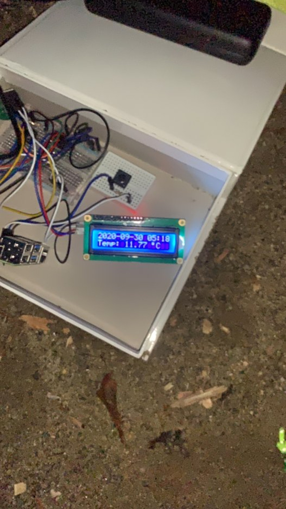
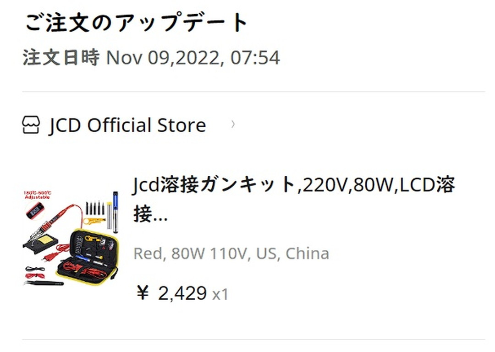
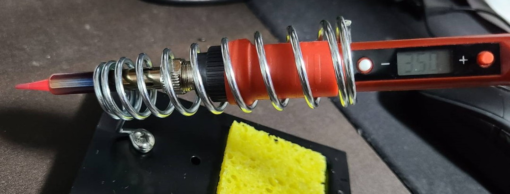
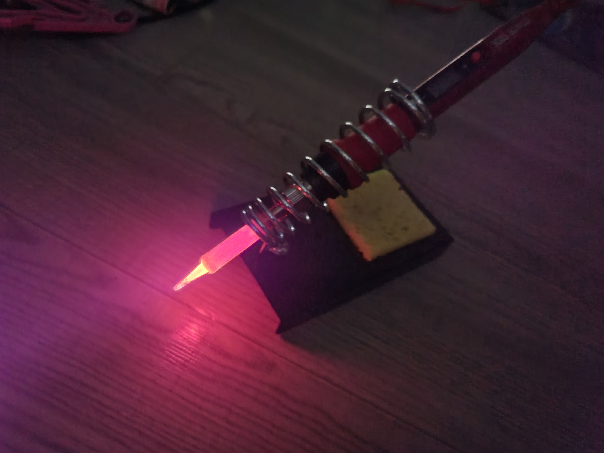
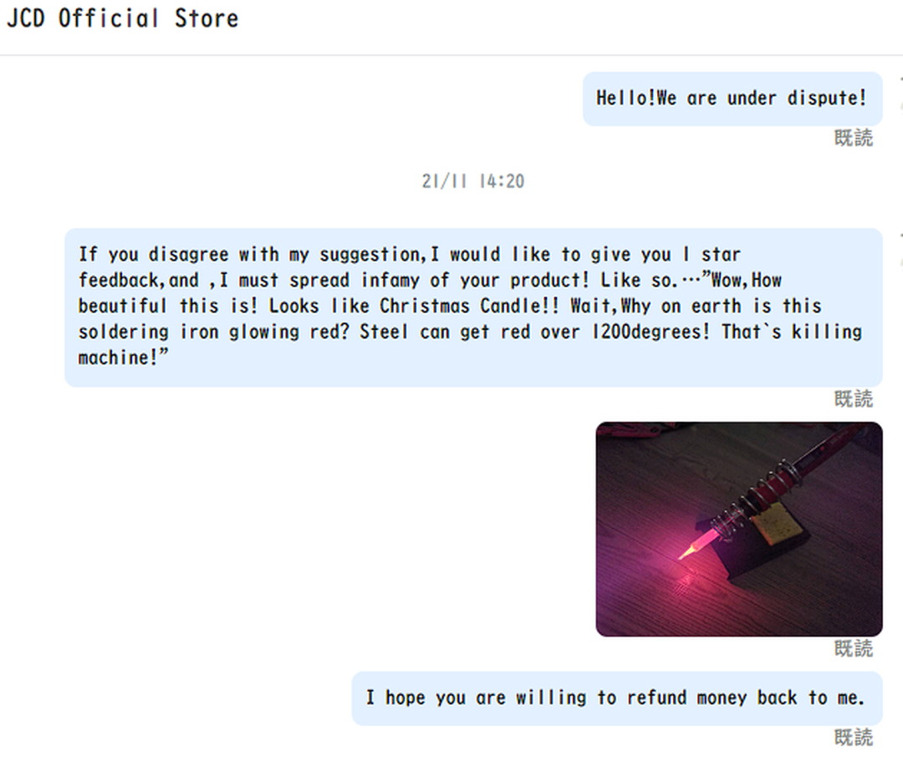
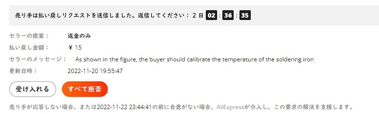
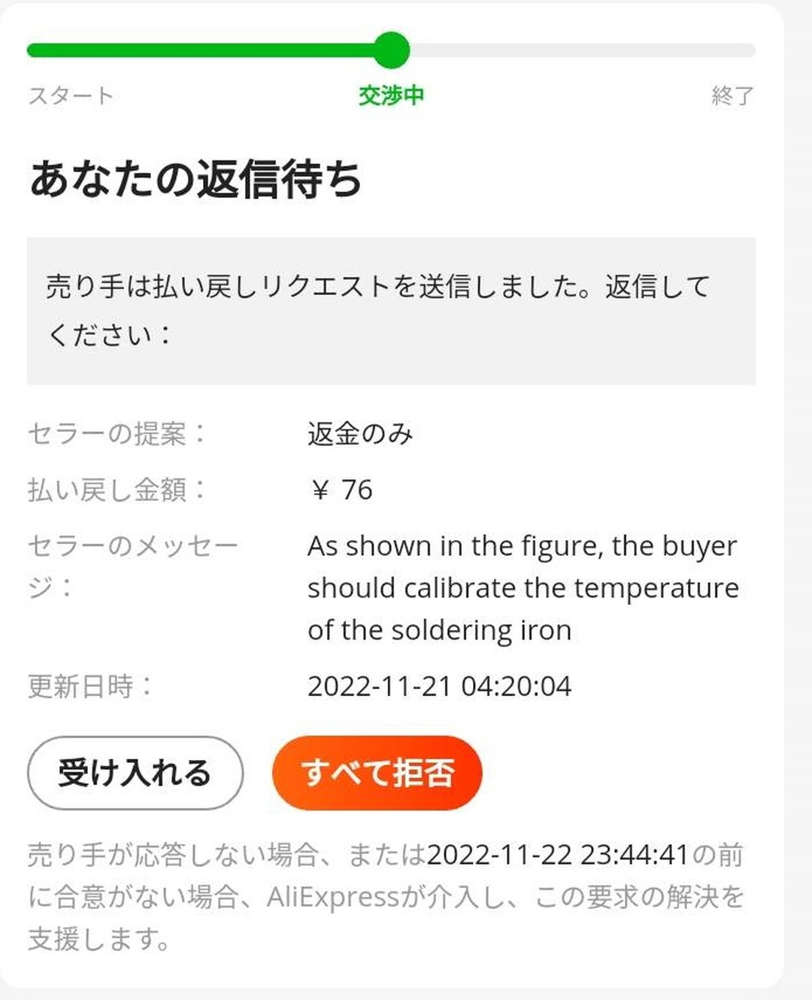
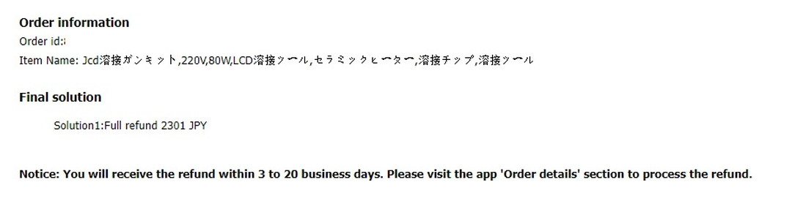
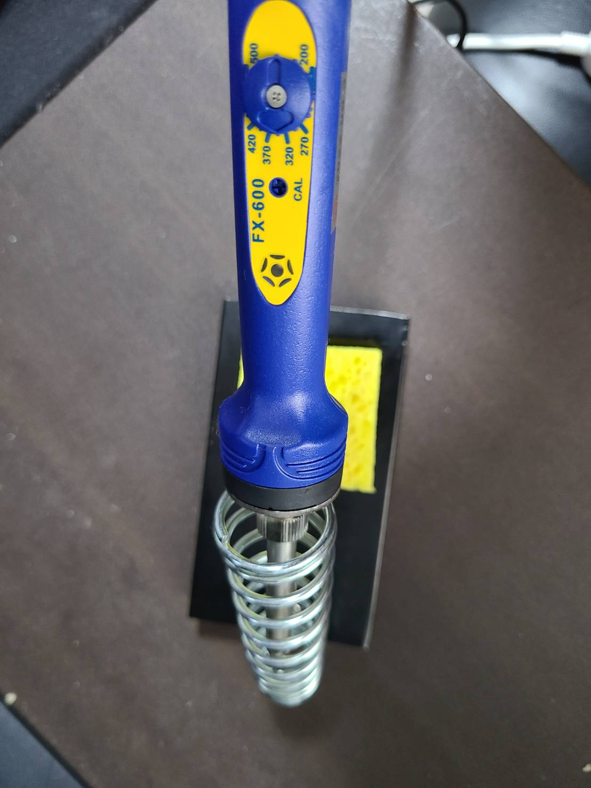
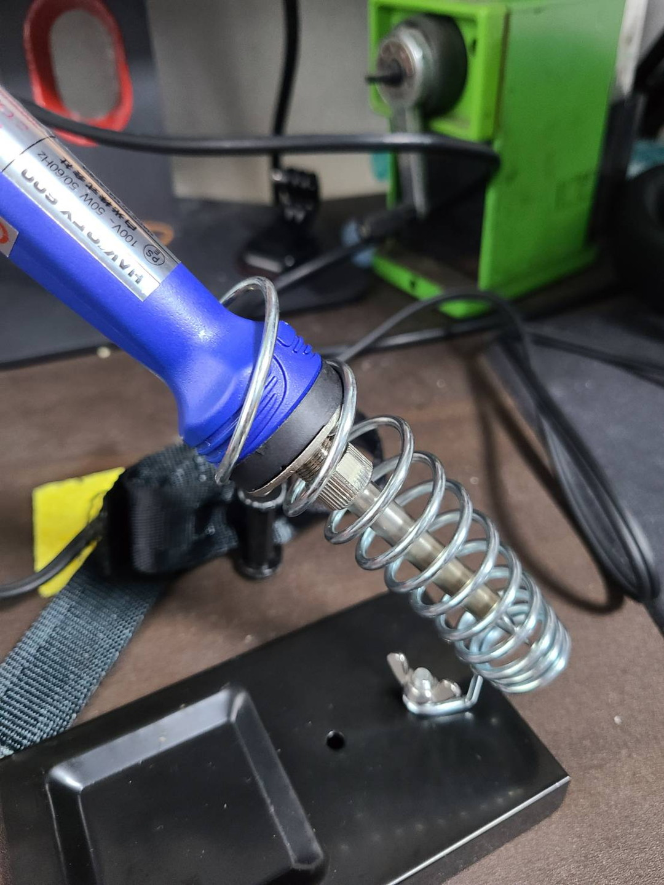

投稿日:
注意事項
電子回路もプログラミングもほとんど素養がないよ。何もかも間違えてるから参考にしないでね。
ラズパイでつよつよになりたい準備体操
今まで自転車関係の記事ばっかりラッシュで更新してきたが、別にサイクルブログとしてこのサイトをおーぷんしたわけではない。
自分のささやかな成果をポータルするためとhtmlいじってみたいという目的がメインなのである。
と、いうことで今回は家で二年くらい放置されていたラズパイをまた弄り直そうと思ったのである。

どういうのを作るかは行き当たりばったりで決めるのと、知識もないのでガバガバだが、当時キャンプ場等の温湿度,気圧を記録してプロットできるようにしたのでそれを拡張する方向で考えている。ちなみに、書いたコードも配線も全てごちゃごちゃになったのでゼロから作り直す。そもそもコンソールの弄り方も忘れてしまいましたわ～。
はんだごてを買う。
さて前回はブレッドボードに刺して終わったが今回こそは基盤に載せてポータブル端末として機能させたい。
とりあえず馬鹿だからよくわからねえけど調温はんだごて買えばいいんだろ。何を隠そう私の家にはダイソーのはんだごてが1本あるだけでほかに機材など存在しないのである。えっへん。今までなんかはんだごてが必要なときはこて台すらなかったので適当な皿にティッシュ濡らして使ってたぞ。と、そんな自分が高いはんだごてなんて買うはずもなく……。

AliExpressでJCD製908Sの格安はんだごてキットを購入したぞ。Amazonに似たような商品あるし大丈夫でしょ。え？PSE認証？さあ……。
着弾
最近のAliExpressは早いもので1週間もすれば商品が届いた。
ぱっと見良さそう。ただこの日は忙しかったので後回しにしていたので3日後あらためては動作テストをした。Aliではんだごて頼むとかいう暴挙
— わくせい (@ADlGCrQjlnyDKCg) November 17, 2022
まあこれ明らかにAmazonにもあったやつなので買ったんだけど pic.twitter.com/l0phlIUsTb
なんか君…赤くない？
さてさて、動作テスト。とは言ってもこて先の温度計なんてないから詳細はわからんけど。とりあえず温まってればいいだろ。とりあえず350度が一番使うらしいからそれにセットして。

わあ赤いなぁ。これがセラミックヒーターなのか。僕のダイソーのとは大違いだ。と思いながら電工2種持ってる友人に画像を送ってみる。
どうやら大変なことになってるらしい。なになに、鉄は600~800度で赤くなって……。へえ……。
じゃあ何かい、300度～700度くらい温度差あるってわけかい。じゃあこれ設定は500度までだから1200度とかになっちゃうこともあるのかい？ウッソだぁ。

クリスマスキャンドルみたいできれいだなぁ……。今年ももうのこりわずかかぁ……。
紛争開始
どう見ても不良品です本当にありがとうございます。ということで返金請求をすることにした。なにやら返品は基本元払いっぽいので。
AliExpressの購入履歴には”紛争を開始”という物騒な文字が存在する。これは訳が適当なだけで要は商品に不備がある場合に交渉できるサービスだ。Amazonみたいにワンクリックで返金できるわけではなくセラーと話してそれでも解決不能ならAliが仲裁に入る。
一応紛争前にメッセージセンターでやり取りをしてからがセオリーらしいが、正直そんな事しても意味があるのか不明。さっさと電撃戦と行こうじゃないか。
我々は紛争状態である！
とりあえず明らかに赤いはんだごてと異常な温度ということを表記して紛争を開始した。
あと、なにやらこのセラー星5つけたらギフト上げるよとかやってるのでついでにメッセージセンターから直接「返金か、低評価か」という交渉材料を出すことにした。

見返すと過激な気もするが、基本中華セラーもわりとつっけんどんな態度で来るのでこれくらい主張しないと心が折れる。

メッセージセンターは無視され、紛争画面で15円という0.1ドルというどう算出したのかわからない額を提示された。拒否だ拒否。

その後,今度は0.5ドル。競りじゃないんだが？と拒否し再度メッセージセンターから連絡を試みる。
と、まあこんな感じに続けていたら反応があった１ドルと新しいはんだごて送るから勘弁してくれ～との連絡。これも拒否。返金してくれ～っていったら「いやまあはんだごて以外は普通に動くだろ？だから8ドルな」と主張された。「いや、はんだごて単品12ドルだから最低それくらい返してくれ。そしたら星3くらいはつける。」と返したら紛争画面で新たな提案が
8ドル何処行ったんだよ！！とこれも拒否。それから数時間後タイムアップでAli運営側による講和が開かれた。
主張無くして勝利なし

どうやらこちらの正当性が認められ全額返金。商品を送り返す必要はないらしい。
と、なったわけである。とりあえず付属品は鹵獲できちゃったみたいなのではんだごてだけちゃんとしたのを買おう。
ということでHAKKOのFX-600を買った。
ちなみにFX-601の方がブラックフライデーセールに来ているので一応貼っておく。

350度程度にセットしても全然赤くならないなぁ。これが普通なのか。いやまあ冷静に考えればDIY動画で赤くなってるはんだごてなんて見たこと無いもんな。

鹵獲したこて台が狭かったので伸ばしたら割りとフィットした。どうもFX-600はふとっちょらしい。
で？ラズパイは？
オレはようやくのぼりはじめたばかりだからな このはてしなく遠い男坂をよ…。あ、ちなみに今回の中華はんだごて抵抗取り付けて温度調整してるブログあったので貼っておく。 …で、ではまた～。